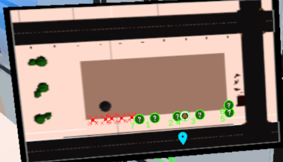
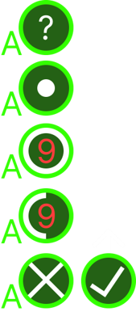

03 / Research · 2026
VR
teleoperation.
A VR interface for operating a swarm of autonomous drones. The project combines robotics, virtual reality and human-in-the-loop interaction in a scenario where an operator explores a building and coordinates drones inside it.



Controlling several drones
The system is built around human-in-the-loop control. The operator does not need to command every drone separately, but can work with formations and use the environment view and minimap to understand what the swarm is doing while investigating a building.
My contributions
- VR interaction and interface design.
- Swarm-control workflow.
- Operator interaction model.
- Environment and minimap systems.
- Robot communication integration.